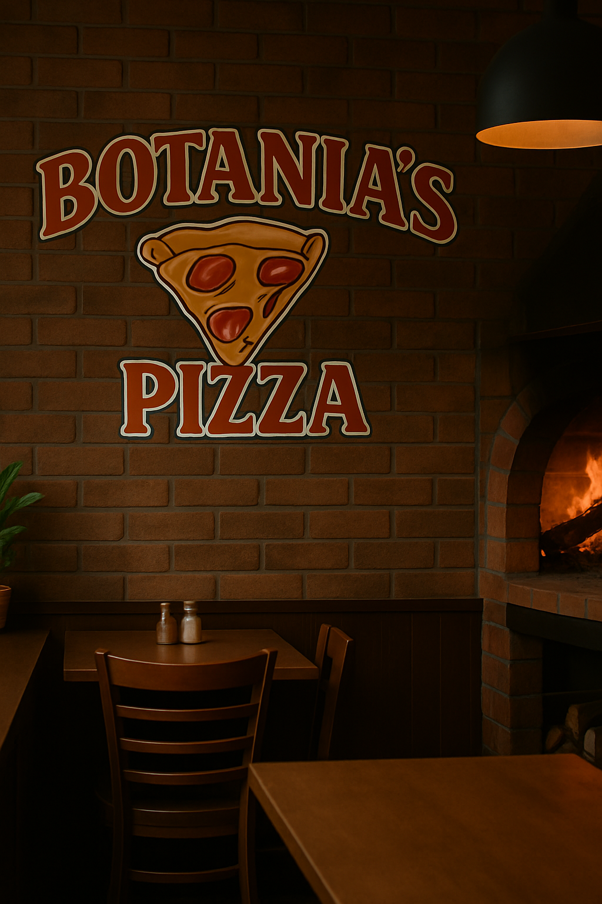

Sobre a nossa Casa!
No coração pulsante da cidade, nasceu um lugar especial, onde os aromas de massa fresca e o calor do forno a lenha se encontram
para criar uma experiência única: Botania’s Pizza. Mais do que uma pizzaria, somos um espaço de afeto, tradição e sabor, criado
para reunir pessoas ao redor da mesa e transformar cada fatia em um momento memorável.
A Botania’s surgiu da paixão de uma família por boa comida e por encontros verdadeiros. Inspirados pelas pizzarias artesanais italianas e
movidos pelo desejo de oferecer algo autêntico, decidimos abrir as portas de um lugar onde a qualidade fala mais alto, e o atendimento é
sempre com sorriso no rosto. Desde o início, nossa proposta foi clara: oferecer pizzas artesanais feitas com ingredientes frescos, massa de
fermentação natural e um preparo que respeita o tempo e a tradição.
Aqui, cada detalhe importa. A nossa massa é fermentada por 48 horas, o que garante leveza, sabor e digestibilidade. Utilizamos apenas ingredientes selecionados, de fornecedores locais e, sempre que possível, orgânicos. O nosso molho é feito na casa, com tomates frescos e temperos naturais. E o queijo? Ah, o queijo é um espetáculo à parte — usamos uma mistura exclusiva que derrete perfeitamente e forma aquele gratinado dos sonhos.
Nosso forno à lenha é o coração da pizzaria. Com ele, cada pizza ganha uma crocância especial e um leve toque defumado que só a lenha pode oferecer. É esse forno que nos conecta às raízes da pizza tradicional, resgatando o sabor original que tantas vezes se perde na correria do mundo moderno. Mas não é só na cozinha que prezamos pela excelência. Nosso ambiente foi pensado para acolher. Apostamos em uma decoração rústica e aconchegante, com tijolinhos aparentes, madeira de demolição e iluminação quente que convida a relaxar. Seja em um jantar a dois, uma celebração com amigos ou um encontro em família, queremos que cada visita à Botania’s Pizza seja uma experiência gostosa do começo ao fim.
Nosso cardápio reflete nossa alma: temos as clássicas, como Margherita, Calabresa e Quatro Queijos, mas também criações autorais que surpreendem o paladar, como a “Botânica” — uma combinação vegetariana com cogumelos salteados, pesto de manjericão e lascas de parmesão — ou a “Mel e Brasa”, com pepperoni artesanal, muçarela defumada e um leve toque de mel picante.
Acreditamos que comida boa é aquela que alimenta também o coração. Por isso, nosso compromisso vai além do prato: buscamos criar conexões verdadeiras com
nossos clientes, apoiar pequenos produtores locais e investir em práticas sustentáveis, como o uso de embalagens recicláveis e a redução de desperdício de alimentos.
A Botania’s Pizza é feita de histórias. Das nossas, das dos nossos colaboradores e das de cada cliente que passa por aqui. E é por isso que temos tanto orgulho do que construímos.
Somos uma pizzaria familiar, sim, mas também somos um pedacinho de casa para quem busca sabor, acolhimento e qualidade.
Se você ainda não nos conhece, está convidado a descobrir um novo jeito de viver a pizza. E se já faz parte da nossa história, saiba que cada fatia que sai do nosso forno leva um pouco
do nosso carinho por você.